What you see
Three colors, one decision
The color tells you whether there is still time to defuse. The marks on the bar are the 10-second (no kit) and 5-second (with kit) limits. A 0.3s margin switches the color a little early to cover your reaction time. The labels on the keys are in Portuguese: DÁ SEM KIT means no kit needed, SÓ COM KIT means kit only and SEM TEMPO means no time left.
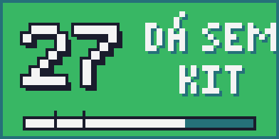
GREEN
10s or more. You can defuse without a kit.
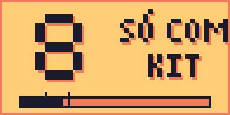
YELLOW
Between 10s and 5s. Only possible with a kit. If you are a CT holding a kit, it shows USE SEU KIT (use your kit).
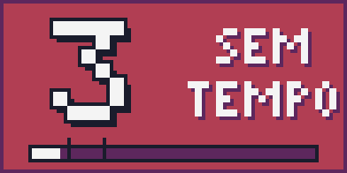
RED
Under 5s. Too late, even with a kit. Time to run.
Original 8-bit art
Every moment has its own animation
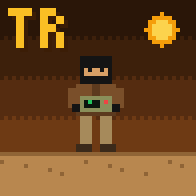
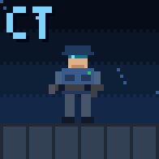
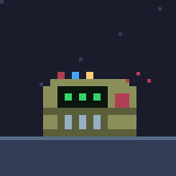
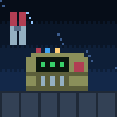
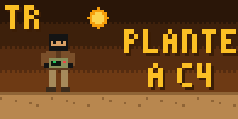
Why it doesn't flicker
Every image sent to the D200 makes the key flicker while it redraws. So the plugin sends the whole countdown at once, as an animation, the moment the bomb is planted. The deck animates it on its own.
It detects whether you are T or CT from the game, and keeps showing your side even when you die and watch a teammate.
Step by step
Install in 6 steps
Download and extract
Download the plugin ZIP, right-click it and choose "Extract All".
Close Ulanzi Studio
Close the window and also the icon next to the Windows clock (right-click, Exit).
Copy it to the plugins folder
Press
Win + R, paste %APPDATA%\Ulanzi\UlanziDeck\Plugins and hit Enter. Copy thecom.ulanzi.cs2c4.ulanziPluginfolder into it. When you open the copied folder,manifest.jsonmust be right there.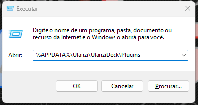
Win + R with the path 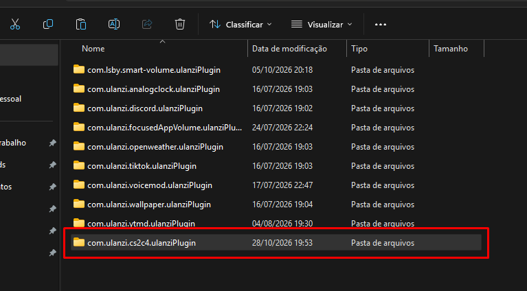
The plugin folder next to the others Put it on your keys
Open Ulanzi Studio. In the CS2 C4 Timer category, drag C4 Timer (called Timer da C4 if your Ulanzi Studio is in Portuguese) onto a key, or onto two neighboring keys in the same row for the wide key. It joins them on its own.
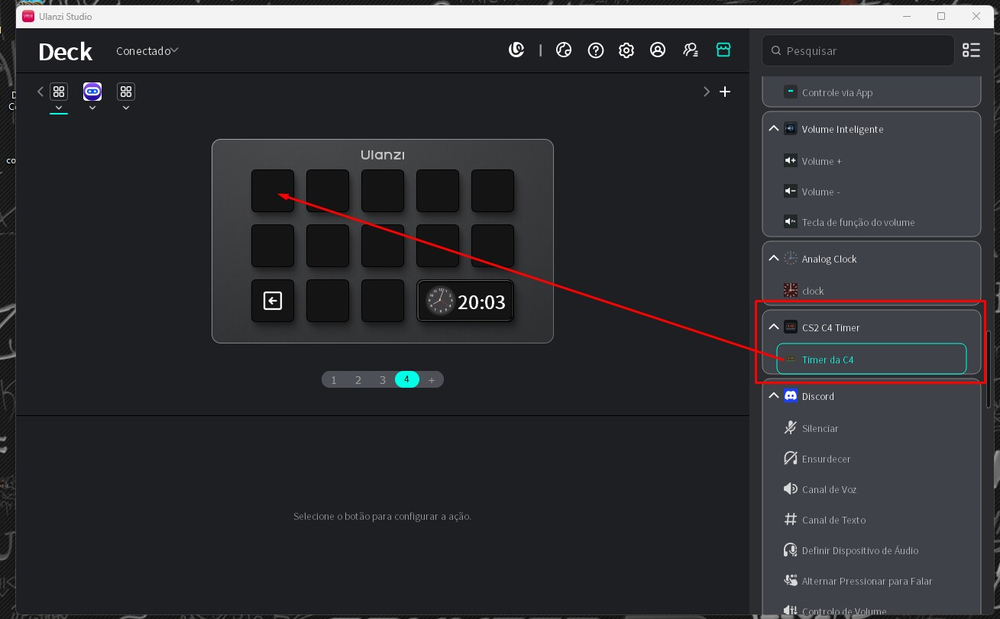
Drag the action onto the key Connect it to CS2
Click the key and press Instalar no CS2 (install in CS2). The plugin finds the game folder in Steam and writes a config file. If it can't find it, use Ver arquivo .cfg (show .cfg file) and save the text in ...\Counter-Strike Global Offensive\game\csgo\cfg.
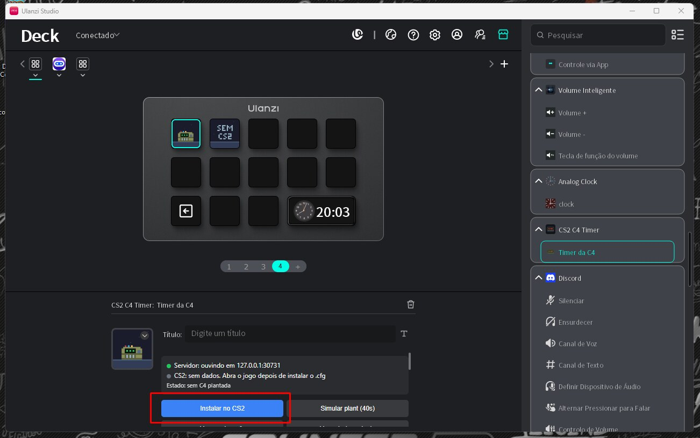
Click the key and press "Instalar no CS2" Restart CS2 and test
With the game open, the panel shows CS2: conectado (connected). To test without playing, press the key itself: it runs a 40-second simulation. Watch until the end.
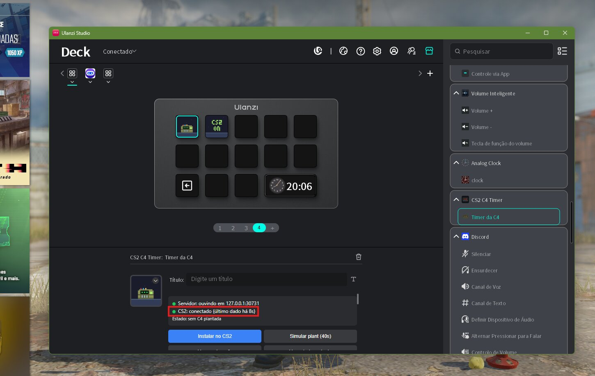
With the game open: "CS2: conectado" 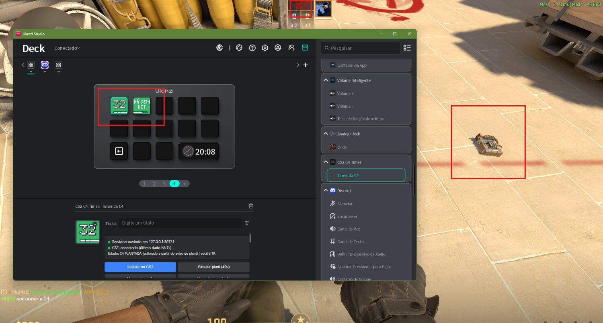
C4 planted: both keys are already counting
Bonus: the long window
The window in the bottom-right corner doesn't accept plugins, only a clock, PC stats or a background image. To match, select the window, go to Background image and pick assets\janela-456x196.png, which comes inside the plugin folder.
Under the hood
How it works
CS2 has an official feature called Game State Integration, made by Valve for stage lighting, peripherals and broadcast overlays. With a config file in the game folder, CS2 itself sends the match state to an address on your computer. The plugin receives that data and draws the keys. Nothing leaves your PC.
The question everyone asks
Can you get banned? Is it a hack?
Why we think it won't get you banned
- It uses Game State Integration, a feature Valve itself documents and that ships with the game.
- CS2 is the one sending the data. The plugin doesn't read game memory, doesn't inject anything and doesn't change game files.
- It's the same feature used by tournament overlays, RGB lighting and peripherals.
There is no official guarantee. FACEIT, Gamers Club and tournaments have their own rules and may ban any external program or C4 timer. Check before using it there. To turn it off, delete gamestate_integration_ulanzi_c4.cfg from the CS2 cfg folder.
Why it's not a hack
- A real hack gives you an edge with something other players don't have: seeing through walls, aim assistance, hidden information. That hurts people who play fair.
- The timer does none of that. It doesn't reveal anyone's position, doesn't touch your aim and doesn't change anything in the game.
- CS2 has no official C4 timer on screen, but the whole community knows it lasts 40 seconds and that when the music speeds up, that's the line between defusing without a kit and kit only.
- The plugin turns that knowledge into a color. It's a visual, functional gadget that helps you decide faster: defuse or run.
- On purpose, the plugin doesn't show whether someone is defusing. For the T side that would reveal what the game hides and kill the mind game of peeking or not to stop the defuse.
- According to Valve's documentation, while you play CS2 only reports that the bomb was planted, the same moment everyone notices in the match. Fake plants don't fool it.
Questions
FAQ
Does it work when the enemy team plants?
Yes. The plant notice reaches everyone, on both sides.
Does it work on the Elgato Stream Deck?
Not yet. The plugin is made for Ulanzi Studio (D200 and family). An Elgato version depends on demand.
What about Valorant?
No. Valorant has no official feature like CS2's Game State Integration.
Does it need internet or an account?
No. Everything happens on your computer, and the plugin doesn't collect or send any data.
Is the time exact?
While you play, the plugin counts 40 seconds from the plant notice the game sends. When you're dead, spectating or on GOTV, it uses the exact time the game sends. If you notice a delay, the panel has a correction field.
How do I update to a new version?
Close Ulanzi Studio, replace the plugin folder and open it again. The CS2 link is reused, so you don't need to reinstall.
Are the keys and the panel in Portuguese?
For now, yes. The key labels and the settings panel are in Portuguese. This page explains each label, and an English version of the plugin depends on demand.
Found a problem, where do I report it?
Open an issue here on GitHub or comment on the TikTok videos.